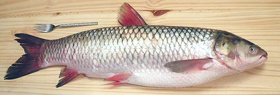

Grass Carp

[Rehu (India); Ctenopharyngodon idella]
A silver bodied fresh water fish imported from Asia, the grass carp
can grow to 59 inches and nearly 100 pounds, but the photo specimen was
27 inches and 8.4 pounds. Grass carp are voracious eaters of underwater
vegetation and are an important food fish in Asia, both farmed and
caught wild.
Use of triploid (sterile) grass carp to control invasive aquatic
weeds was pioneered in the Imperial Valley of California. Triploids are
created by slightly damaging eggs immediately after fertilization.
They grow to only 40 pounds in the irrigation channels and live half
as long as diploid carp but they eat about 90% as much and won't establish
wild populations where they are not wanted. The California hatchery has
been studied by teams from many states and countries.
More on Carp Family.
Warning:
In the state of California,
transporting a live grass carp without valid permits, or failing to
release one caught in the irrigation systems, carries a penalty of $5000
and/or a year in jail. Many other states also have stringent regulations.
The flesh of Grass Carp is white, tender, smooth in texture and mild
with practically no "fishy" taste. Just about anyone should find it
enjoyable - but, Grass Carp does, like all carp, have a "spine problem"
similar to Milkfish (Bangus), a fish in a
related order. Some find the spines rather annoying, but unlike those of
the milkfish they are impossible to remove before cooking. To enjoy
delicious carp Americans just have to learn to deal with the spines at
the table like the rest of the world does. If you don't want to deal with
them, use catfish instead (unless you're an observant Jew or Muslim -
catfish isn't kosher or halal).
Personally I don't have a problem with the spines. As with most fish
I eat carp with chopsticks, breaking it up as I go along. The spines are
large and are easy to find that way. In any case, do provide a small bowl
or some other way for your guests to dispose of the spines. Even in formal
Victorian society it was permissible to remove fish bones from the mouth
(but nothing else).
There's no need to skin grass carp, but some picky eaters just won't
eat skin, so you may want to serve filets skin side down so such people can
leave it on the plate easily, or you can easily peel it off after cooking.
Buying:
Grass Carp can often be found in
markets serving a Southeast Asian or Chinese community, at least here in
California it can. I haven't seen it in the Philippine markets, though,
which do stock Common Carp. As with
Bighead Carp, Grass Carp is usually cut into cross sections because the
fish is so large, but 8 to 10 pounders can sometimes be found whole. If
you see pieces and want a whole fish ask the fish guy (if he speaks any
English) what he has in back.
Cooking:
Most cooking methods suitable for a
large fish can be used for Grass Carp. It remains firm enough to steam and
pan fries just fine with a light dusting of rice flour. It is tender, so
while simmering for 10 to 15 minutes is fine, a rapid boil or much longer
cooking is likely to break it up.
Do Not
cut carp into pieces smaller than about 2 inches on a
side. Doing so makes the spines nearly impossible to deal with.
Scales:
Grass Carp is completely covered
with very large scales, about 3/4 inch square for an 8 pounder. Adhesion
is moderate so they're not hard to scrape off, but they are springy so
they'll fly around a bit. They curl as they dry so they're not difficult
to clean up, but make sure they don't get into your drains, they could
cause a clog.
Cleaning:
This fish is fairly easy to clean, just cut
from the vent right up to the underside of the jaw (you'll need kitchen
shears from the pelvic fins forward) and pull stuff out. There's a big
two chamber swim bladder but it comes out easily and the gills are fairly
easy to pull out. The one obstacle is the throat which contains a massive
grinding mechanism that's not real easy to pull out.
Skin:
Grass Carp skin does not shrink badly when cooked,
in fact you can take a hunk of skin and pan fry it and it'll stay pretty
flat. It has no strong or objectional flavors, so it hardly seems worth
the bother to remove it. If you insist, Grass Carp fillets can be skinned
fairly easily using the standard long knife and cutting board
Method.
Fillet:
This fish is easy to fillet with plenty of bones
to follow. It is one fish where I fillet the flesh off the ribs rather
than cut them loose and deal with them on the fillet. They're easy to
follow and carp bones are stuck in hard and difficult to pull.
Yield:
The photo specimen, 27 inches long and
8.4 pounds, yielded 4.5 pounds of skin-on fillet (54%). I don't have an
exact skinless weight because I never bother to skin it. The filets were
1 inch thick at the thickest part. The specimen was sold at 2009 US
$1.39 per pound in Alhambra, CA, so it's pretty economical compared to
many fish.
Stock:
I've found stock made from Grass Carp heads,
fins and bones a bit too bitter and with a flavor not to my liking.
sf_carpgrz* 090321 - www.clovegarden.com
©Andrew Grygus - agryg@clovegarden.com - Photos
on this page not otherwise credited © cg1
- Linking to and non-commercial use of this page permitted